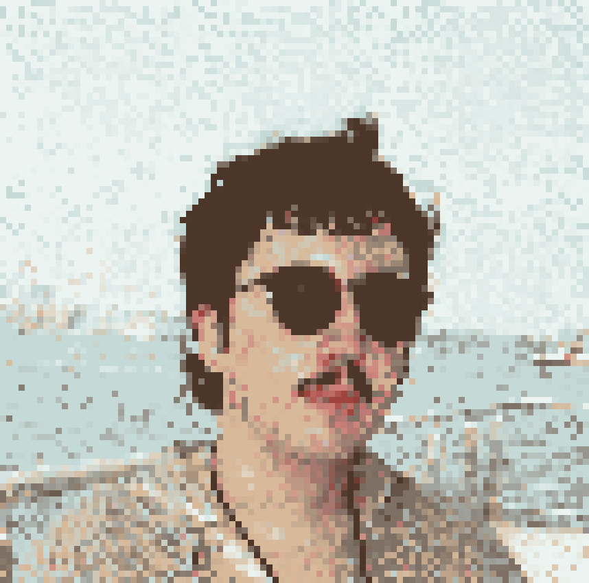

About Me
I’m a Computer Science and Digital Narrative & Interactive Design student at the University of Pittsburgh, focused on game design. I previously conducted research at Pitt, writing C code for intrusion-tolerant distributed systems, and I enjoy exploring storytelling and interactive systems through games and media. Currently, I’m working on an independent study to design and develop my own game.